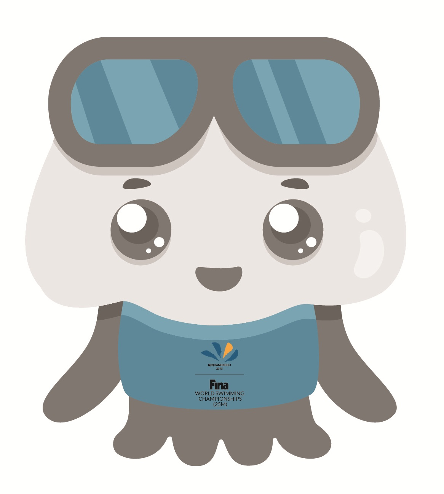

世界游泳锦标赛（World Aquatics Championship），是由世界游泳联合会主办的最高级别的大型国际性游泳赛事，主办机构是国际泳联总会。第一届世界游泳锦标赛于1973年举行，1978年至1998年间举办间隔年数屡有变化，自2001年起恢复每2年举行一届。
原定于2021年在日本福冈举办的游泳世锦赛推迟至2022年的6月份在匈牙利首都布达佩斯举行。北京时间2022年7月12日晚，国际泳联正式宣布，2024年游泳世锦赛将于2月2日至18日在卡塔尔多哈进行。2023年2月9日世界泳联宣布，新加坡将举办2025年世界游泳锦标赛。
2024年2月11日，世界泳联宣布，2029年世界游泳锦标赛将在中国北京举办，比赛具体时间待定 。
2024年2月19日，2024年多哈游泳世锦赛落幕，中国队获得23金8银2铜共33枚奖牌，排名金牌榜和奖牌榜第一。
-
